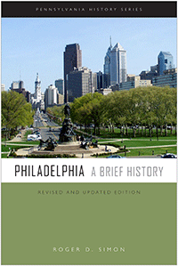

<HTML><head><script> (function(i,s,o,g,r,a,m){i['GoogleAnalyticsObject']=r;i[r]=i[r]||function(){  (i[r].q=i[r].q||[]).push(arguments)},i[r].l=1*new Date();a=s.createElement(o),  m=s.getElementsByTagName(o)[0];a.async=1;a.src=g;m.parentNode.insertBefore(a,m)   })(window,document,'script','//www.google-analytics.com/analytics.js','ga');   ga('create', 'UA-43183130-1', 'temple.edu');   ga('send', 'pageview'); </script><title>Roger D. Simon: Philadelphia - Print</TITLE><link rel="stylesheet" href="../general.css" type="text/css"><SCRIPT LANGUAGE = JAVASCRIPT></SCRIPT></HEAD><BODY LINK="#3152A5" VLINK="#3152A5" ALINK=Gray BGCOLOR=White><CENTER><P CLASS=intro><br>A concise and readable overview of the history of Philadelphia from its founding to the early twenty-first century<br><br></P></CENTER><br>&nbsp;<!--none//--><Table width="100%" border=0 cellspacing=5><tr><td width="175" align="center"></td><td><h1 class = "booktitle">Philadelphia</h1> <h1 class = "subtitle">A Brief History<br/><br/>Revised and Updated Edition</h1><h3 class="author">Roger D. Simon</h3><p class="info">paper EAN: 978-1-932304-26-8</br>$19.95, Jul 17, <font color=#990033>Available</font><br><p class="info"><p class="info">Electronic Book EAN: 978-1-932304-27-5</br>$19.95, <font color=#990033>Available</font><br><p class="info">156 pp, 6 x  9, 3 tables, 30 halftones, 6 maps</p></td></tr></table></P></td></tr></table><BR>
	
	<BLOCKQUOTE><p>"Philadelphia: A Brief History <i> covers a long chronological span and maintains a fine focus on a broad array of themes and concerns. Its synthetic ambitions are great, and Simon succeeds in fulfilling them to an impressive degree. In particular, the book's method of balancing and combining economic, political, civic, social, and built environment histories highlights their influences on one another and Philadelphia's broad historical sweep. Philadelphia also does a stellar job of distilling complex scholarly treatments of various subjects into a reader-friendly style. This </i><i>revised and updated edition is a wonderful achievement</i>."<br/>&#8212;<b>Peter Siskind</b>, Assistant Professor and Chair of Historical and Political Studies at Arcadia University<br>
	</BLOCKQUOTE>
	
	<P><p>Understanding Philadelphia's history requires that we understand that nothing is inevitable; history is not made by abstract forces, but by the decisions of real individuals as they conduct their lives. With its insightful analysis and engaging prose<i>, Philadelphia </i>provides an accessible and readable overview of the history of the Quaker City from its founding by William Penn to the deindustrialization and gentrification of the early twenty-first century. Roger Simon asserts that the history of Philadelphia is a story of the efforts to sustain economic prosperity while fulfilling community needs, and the continued tension between those priorities.<br>
	<p><i>Philadelphia</i> devotes considerable attention to the evolving physical development of the city and to the social conditions and class structure of the people. Three dozen maps and illustrations enrich this edition, which has been fully updated and revised to reflect new scholarship on Philadelphia's role in the post-industrial present and the diverse communities that incorporated women and minorities into the economic and social fabric of the city. <br>
	<p><i>Published in association with the Pennsylvania Historical Association</i><br>
		
    		
		<P CLASS="top"><A HREF="#top">BACK TO TOP</A></P></p>
		
		<P><h2  class="inpageheading"><A NAME="excerpt"></a>Excerpt</h2>
			<p><A HREF="http://www.temple.edu/tempress/chapters_2400/2442A_ch1.pdf"> Read an excerpt from the Introduction (pdf).<br/> </A><br><
				
		

<P CLASS="top"><A HREF="#top">BACK TO TOP</A></P></P>
	<P><h2  class="inpageheading"><A NAME="reviews"></a>Reviews</h2>
		
	<p><i>"It fills a profound need for a Philadelphia history of this kind, and it's likely to be the go-to brief history for this generation.... Simon's writing is pellucidly clear, and the text is graced by several well-chosen illustrations and photographs, as well as a few instructive population tables at the end of the book."</i><br>&#8212;<b><i>George Hunka</i></b><br>
	
<P CLASS="top"><A HREF="#top">BACK TO TOP</A></P></P><P></b></p>

<p><h2 class="inpageheading"><A NAME="contents"></a>
	Contents</h2><P><span style="font-family: 'Verdana';font-size: 13px;" >
		Editors&rsquo; Foreword, by Allen Dieterich-Ward and Beverly C. Tomek<br/><br/>
		Acknowledgments<br/><br/>
		Introduction <br/><br/>
		1. Establishing a Community/Building an Economy: Beginnings to 1800 <br/>
		2. Community Good/Manufacturing City: 1800&ndash;1865<br/>
		3. Industry Triumphant/Civic Failure: 1865&ndash;1930<br/>
		4. Economic Decline/Community Turmoil: 1930&ndash;1980<br/>
		5. Struggling toward the Postindustrial City: 1980&ndash;2016<br/>
		<br/>
		Appendix: Tables<br/>
		Notes<br/>
		Index</span></P>

<P CLASS="top"><A HREF="#top">BACK TO TOP</A></P></p><P>
	<H2  class="inpageheading"><A NAME="author bio"></a>About the Author(s)</H2><p><b>Roger D. Simon</b> is a Professor of History at Lehigh University. He is the author of <i>The City Building Process: Housing and Services in New Milwaukee Neighborhoods, 1880&#8211;1910 </i>and co-author of <i>Lives of Their Own: Blacks, Italians and Poles in Pittsburgh, 1900&#8211;1960.</i><br>
	
	<P CLASS="top"><A HREF="#top">BACK TO TOP</A></P></P></P>

<P><h2  class="inpageheading"><A NAME="subjects"></a>Subject Categories</h2><P><A HREF="/tempress/history.html" TARGET="_top">History</a><BR><P><A HREF="/tempress/urban.html" TARGET="_top">Urban Studies</a><BR><P><A HREF="/tempress/philly.html" TARGET="_top">Philadelphia Region</a></P></P></P><br><h2 class="inpageheading">In the Series</h2><p><a target="_top" href="http://www.temple.edu/tempress/penn_history.html" OnMouseOver="window.status='Click for other books in this series!';return true;"OnMouseOut="window.status=" ><i>Pennsylvania History</i></a></P><p><p>The <em>Pennsylvania History </em>series, designed to make high-quality scholarship accessible for students, advances the mission of the Pennsylvania Historical Association by engaging with key social, political, and cultural issues in the history of the state and region.</p></P></P></P><P CLASS="top"><A HREF="#top">BACK TO TOP</A></P></td><td width=2%>&nbsp;</td><td width=5>&nbsp;</td></tr></table><BR><font face="Arial" size="1"><a href="copyright.html" OnMouseOver="window.status='Web Copyright Policy';return true;" OnMouseOut="window.status=''" TITLE="Web Copyright Policy">&copy;</a> 2017 <a href="http://www.temple.edu" target="new" OnMouseOver="window.status='Link to Temple University home page';return true;" OnMouseOut="window.status=''" TITLE="Link to Temple University home page">Temple University</a>. All Rights Reserved. This page: http://www.temple.edu/tempress/titles/2442A_reg.html</font></BODY></HTML>                 
